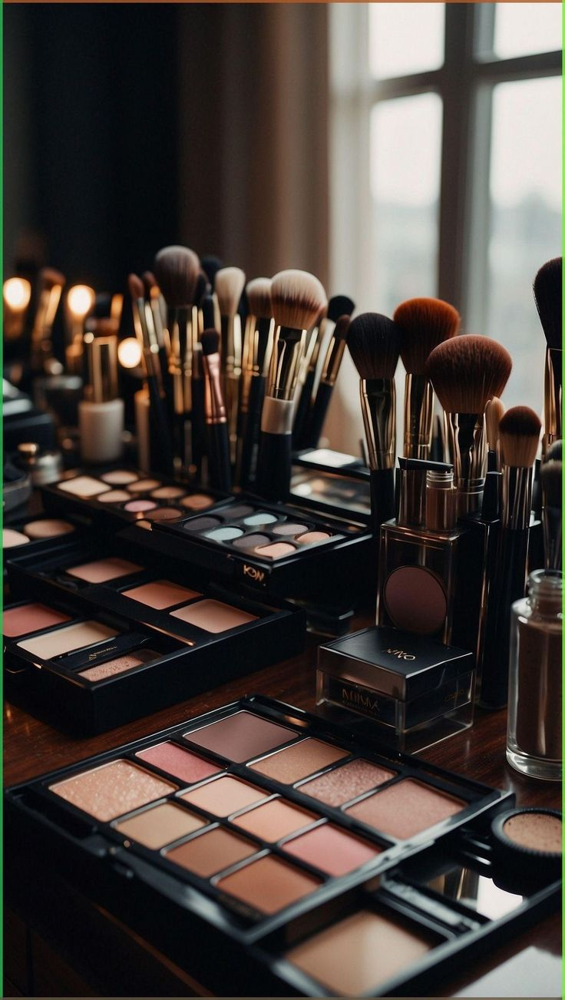
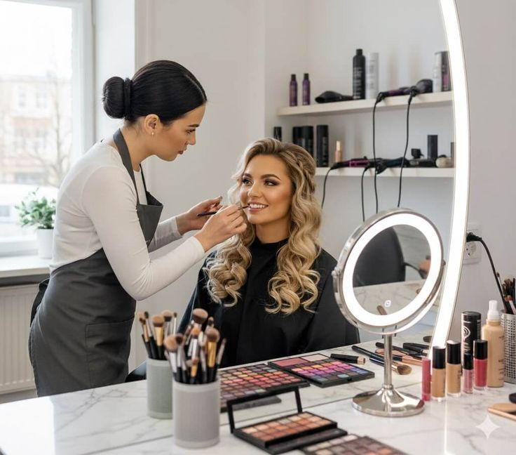
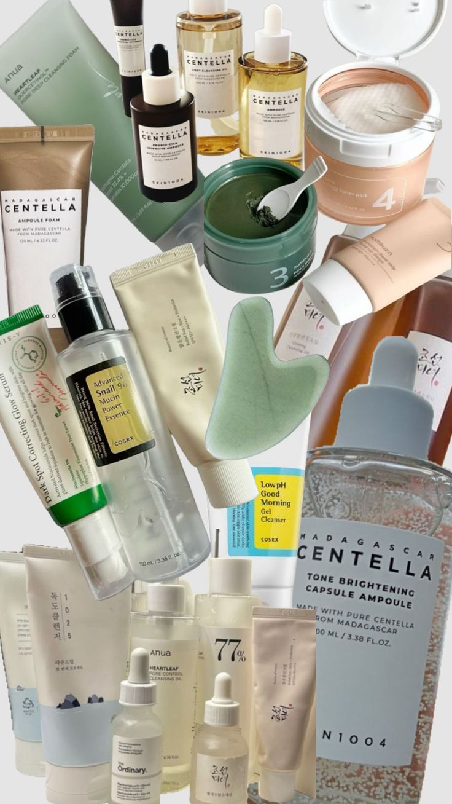
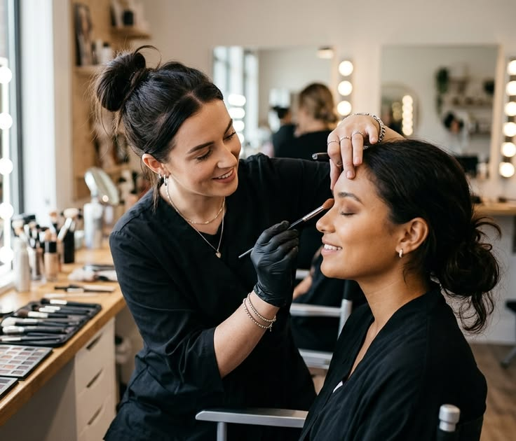
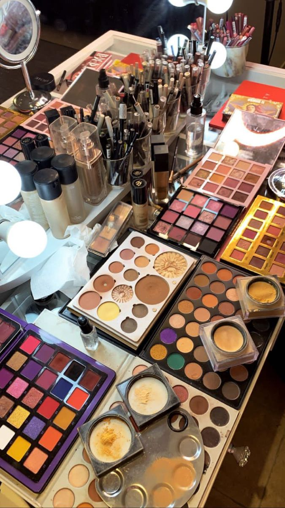

practica_html5
Belleza sin filtros
El mejor proyecto de belleza eres tú. Aquí hablamos de cuidado real, sin promesas falsas. Solo hábitos que sí funcionan.

El mejor proyecto de belleza eres tú. Aquí hablamos de cuidado real, sin promesas falsas. Solo hábitos que sí funcionan.


SPF 50 todos los días. Llueva o truene. Es el 80% del antienvejecimiento.
Por dentro y por fuera. Agua + crema según tu tipo de piel.
Desmaquillarse siempre. La piel se regenera en la noche.


La idea es que te veas como tú, pero con la mejor versión de tu piel. El maquillaje es un accesorio, no una máscara obligatoria.

"La industria vende inseguridades. Yo elijo comprar paz mental. Esa no viene en frasco."
Gasta en experiencias, en terapia, en descanso. Tu cara te lo va a agradecer más que el sérum de $2000.